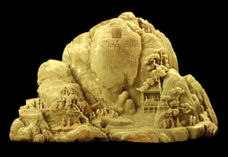

|
Asian Art | |
|
(c) |
|
|
Explore the culture, history, and religion of Asia in
Japanese paintings, Buddhist sculptures, and Chinese
bronzes, ceramics, and jades, including the largest carved
jade mountain in the West. You can also see the world's only
preserved Tibetan sand mandala. This gallery includes an
interactive
program. | |